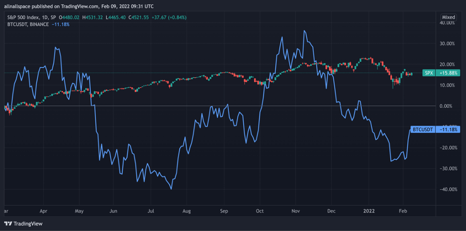

Can bitcoin be a safe haven asset? This is a question that will dominate
in the upcoming years and perhaps even decades. Ironically, since its
inception, bitcoin has been perceived by many people as the new safe-haven
asset, the alternative to gold, silver, the US dollar, and the alleged
failing financial system.
But is Bitcoin really a safe haven asset? After all, it’s not even a
tangible asset, and as for now, it’s still a concept more than a useful
currency. On the other hand…
First, What is a Safe Haven Asset?
So, what is a safe haven asset in definition and meaning? Well, in simple terms, a safe haven asset is any financial instrument or physical commodity that will retain or appreciate in value in times of economic uncertainty, economic recessions, or a total collapse of the financial system. Consequently, these safe-haven assets offer protection against high inflation rates, local currency devaluation, and a collapse of equities markets.
The most common and well-known safe-haven asset is gold, largely due to its role in the financial system as a store of value and its characteristics as a precious metal. Other examples include precious metals like silver, copper, platinum, and aluminum. Treasury bonds of developed countries are another asset class known as safe-havens.
Other than that, many analysts and financial experts believe that other asset classes like grains and softs can also be considered reliable safe-haven assets. Wheat, corn, soybean, sugar are the most precious commodities in the world that will always have a demand regardless of what happens in financial markets and the global economic system.
So, Can Bitcoin Be the New Safe Haven Asset?
Obviously, that is a matter of opinion and largely depends on the way an individual perceives the financial system and the global economy. Here are my thoughts on this topic – some argue that bitcoin can not yet be considered a safe haven asset among investors and institutional investors. In other words, it has no real value in the financial system. Why? Because it’s a speculative cryptocurrency asset and it lacks the key characteristics of a safe haven asset.
Indeed, bitcoin is not yet perceived by the majority of people as a stable
asset. First, the volatility of bitcoin and the crypto space, in general, is
the most crucial problem of all. A safe haven asset cannot be volatile and
unpredictable like bitcoin or other cryptocurrencies. Secondly, bitcoin is
not as liquid as other commodities like digital gold for example and the
transaction costs are still a major problem. Lastly and most importantly, in
the current situation bitcoin is still a risky asset, especially in the eyes
of governments and financial institutions.
Taking this into consideration, as a trader, I wouldn’t yet recommend
treating bitcoin as a safe haven asset. Bitcoin is a new phenomenon in our
modern society and its role in the global economic system is not yet clear.
Further, it’s in a catch 22 situation. As the Chief Investment Officer of
Asset Management said: “It may become less volatile if large investors buy
it, but large investors may hesitate to buy it until it becomes less
volatile”.
But, ironically, bitcoin is also the perfect solution for an economy with a
collapsing currency and a regressing economy. Meaning, in some cases, it
could be the perfect safe-haven asset. Or, the ideal alternative for a
country with a high inflation rate, and a decreasing valuation of its
national currency. That is the current case in Turkey, for example, where
Bitcoin is booming due to the Lira crisis and the hyperinflation of around
50%. The same happens in Venezuela where bitcoin adoption is growing
exponentially.
Whether bitcoin can protect against inflation remains to be seen. True,
bitcoin is not affected by interest rates or economic figures, and the only
reason for its price fluctuations comes from other people’s willingness to
buy and sell it. In that sense, bitcoin is a resilient asset that can be
used in any local economy.
I mean, if you lived in a country with a high inflation rate and a devaluing
currency, what would you prefer – bitcoin or gold? bitcoin or soybeans? I
guess bitcoin.
What’s the Conclusion?
In my view, the discussion about whether bitcoin is a safe haven asset or not is perhaps the biggest reward for bitcoin and its founder, Satoshi Nakamoto. In the 2020 mini-crisis, bitcoin was skyrocketing, raising questions about its role in the financial system and more importantly, as being the alternative to gold as the most common safe-haven asset. However, during the last stock market sell-out in early 2022, bitcoin had a positive correlation (for the first time) with the equity markets

Based on this, bitcoin is currently perceived by investors as a speculative
asset more than a valuable commodity. When the stock markets crash, bitcoin
is expected to follow. So, even though it has the potential to replace gold
and become a safe haven asset in the future, at least for now, it does not
trade and acts like one. But for the ordinary citizens who need to face
inflationary pressure, bitcoin is more valuable and useful than any other
safe-haven asset in the entire world.
In summary – bitcoin is just something else. It isn’t considered a
safe-haven asset in the financial system and among traditional investors,
but it certainly can be an alternative currency for countries with high
inflation rates and a depreciating currency.